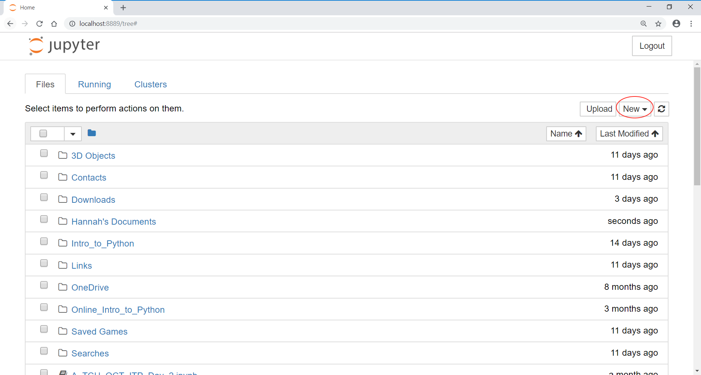
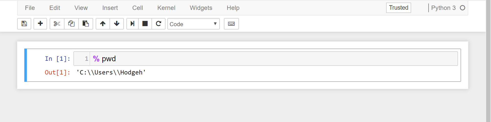
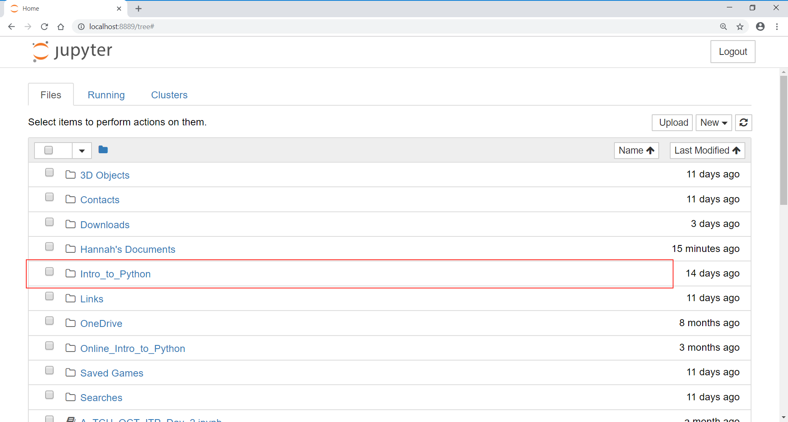

Intro to Python - Pre Course Materials

This is an introductory level course aimed to introduce the programming language, Python. This course will cover introductory concepts and give you the confidence to work independently within Python. It is split into Core and Reference materials, where Core is mandatory and further split into Part 1 and Part 2; where Part 1 introduces the language and builds up skills in Data Analysis; and Part 2 builds upon the programming toolbox to introduce Control Flow, Loops and Functions. Reference material is optional and acts as an excellent reference tool (hence the name :D) when building some more advanced skills as well as introducing more data types and techniques that are outside the scope of the course, but inside the scope of more complex modules like Introduction to Machine Learning in Python.
No prior coding or statistical knowledge is assumed when taking this course from the start, however, Core Part 2 requires you to have covered Core Part 1 and the Reference materials assume that you have covered both sets of Core materials. This ensures the course flows in the way it was intended to, allowing you to gain that solid foundation in Core Part 1, build the toolbox in Core Part 2 and expand upon this in Reference materials if and when you cover them.
1 Course Materials
The zipped course materials can be found on the Learning Hub under the header “Course Material”. You should see a folder icon named “Intro to Python” with some information underneath that is summarised here. Click this folder and then the structure of the folder (like a tree of files) will be shown. Please click the “download folder” button to begin the process of downloading the materials.
- Chrome: This should save the .zip folder to your download folder.
- Internet Explorer: Choose “Save” from the yellow bar
Now to unzip the folder and begin utilising the materials, follow these steps:
In your file explorer (The folder icon on your taskbar, or you can type this into the search bar) find the .zip folder that you downloaded.
Right click on the folder and choose extract all.
Change the destination folder to be the folder to your default working directory (think of this like your main working area where you tend to save most of your work) - this is probably
C/Users/Your_Username. Of course, you are more than welcome to save this where you would like, you can even right click in the area of your choice and select “New Folder” which can be named and then used as the destination to save the materials. If you are unsure of your working directory instructions can be found later in this notebook under “Checking your working directory”.
The course materials are in several folders:
pre_course_materials - HTML Documents and the Quarto Markdowns used to create them, containing the pre-course materials (such as this one!) as well as the images taken from Binder that are used within them.
data - contains the data we will use during the course, a mixture of csv (Comma Separated Value) files and xlsx (Excel spreadsheet) files.
html_course_version - The HTML versions of the course materials.
images - The images used throughout the course HTMLs.
notebooks - Contains the Jupyter Notebooks (.ipynb files) that we’ll use in the course. These are a kind of Python file where both text and code are contained. This will be introduced in Chapter 1 of the course materials.
outputs - A location to save files (you can put your filled in exercises here for example).
You will see many folders that are named after the .qmd files, for example “binder_info_files”, which are the style sets and more for the HTMLs that have been rendered. You will not need to open or use these (but of course if you’d like to have a look you are more than welcome to) but you must keep them where they are, don’t arrange them into a folder of their own as the HTMLs will error.
2 File Formats
This course contains documents in the following formats:
- HTML Files
- CSV Files
- Excel Files (.xlsx files)
- Jupyter Notebook Files (.ipynb files)
- Quarto Markdown Files (.qmd files)
Quarto is a newer version of R Markdown with superior rendering and presentation qualities. This software (which is used within RStudio) was used to create the HTML course documents, as unfortunately, Jupyter Notebooks’ HTML renders are deemed much less accessible by the Disability Access Centre (DAC) and as such should be avoided where possible. They are useful when it comes to learning Python and also creating scientific reports, but not so much for creating training materials or documents that are aimed to be shared to a wider audience.
Some departments have issues with reading excel files into Python. If you have run the solution code and still get an error you may need to save as a different file type in excel (you can click “Save as” and change the filetype to .csv for example but this comes with the caveat of possibly altering formatting!). You will also need to contact your department for guidance about how to read excel files, in case there is a way to do this without resorting to a change of file type.
3 Software Requirements
- Anaconda Suite ONS Current version - ANACONDA Anaconda 2020.07 (64 bit) for Python 3.8.3 - (The version numbers may change over time - as long as Anaconda is listed this is fine.)
Some Users may also have Python Anaconda 4.4 for Python 3.6 which is also fine.
Anaconda Suite is a collection of software (including Jupyter Notebooks, Spyder and Jupyter QT console) and packages (including Pandas, Numpy and Matplotlib) that are used for this course. It also has its own built in command line via the Anaconda Prompt, where packages can be installed, updated etc. Details on using these interfaces can be found in the Command Line Basics course.
- Web browser
Internet connection not necessary
- Excel / Spreadsheet program
Viewing .csv and .xlsx documents in the native program can be useful at times.
3.1 Software / Package Versions
Contents of this course are written for specific software and package versions. Usually, packages are backwards compatible but there may be some slight parameter differences (names for example may differ) which may need to be troubleshooted. In the majority of cases, the course code will still function as expected.
We will explore how to find your version after we load each package in the main course materials. Note that ONS currently uses the following versions:
- Anaconda 2020.07
- Python 3.8.3
- Pandas 1.4.2
This course has also been tested on another common version used in the ONS:
- Anaconda 4.4
- Python 3.6
- Pandas 0.20.1
4 Installing Anaconda Suite
The following advice and guidance applies to staff at the Office for National Statistics (ONS). If you are part of another government department and are using a networked laptop please approach your IT team for how to install Anaconda Suite. This is something that varies across many Public Sector departments and is imperative to sort as soon as you can. Getting this out of the way now during the Introductory course will pave the way for more complicated modules later on, should you take them. Plus it also ensures that incorporating this into your workflow is made easier.
If you are using an off-network laptop and have permission to do so please follow the instructions on the anaconda website. Please choose the version starting Python 3 and the right Operating System (OS).
4.1 ONS Colleagues - Service Desk Call
- From Reggie choose “Service Desk”, where you may need to enter your email address.
- Choose “I want something”
- Choose “Software, Applications and Platforms”
- Choose “Computer Software - Add/Transfer”
- Choose “Install”
- In the box underneath “Please select the Desktop/Laptop software you need to be Installed/Removed/Transferred” type “ANACONDA Anaconda 2020.07 (64 bit) for Python 3.8.3” and click to select. n.b (The version numbers may change over time - as long as Anaconda is listed this is fine.)
- Add your asset number (on a sticker on your device, usually starts with ONS).
- Does this software need to be installed on/removed from multiple PCs? - Choose No
- Choose Order Now.
During busy times it may take a few days for software to be installed. Please plan accordingly if you are on a course; online alternatives (Binder, Google Colab, Kaggle) are available if you cannot get software installed in time. In fact, it is recommended that if you have access, to create a Kaggle account as this is a fantastic platform for Data Scientists of all skill levels, even those who are just interested in the field. They hold competitions regularly that are incredibly popular, attracting an audience that ranges internationally and works at different skill levels (there are Exploratory Data Analysis projects, Machine Learning projects, Natural Language Processing projects, etc).
This is a fabulous opportunity for networking as well as putting your skills to the test on an interesting piece of data that has been chosen for you. Kaggle is also an open source platform that has it’s own versions of notebooks that can run both Python and R code. We have used this as an ad-hoc teaching tool in the past and found it incredibly useful. You can also host open source, non-sensitive datasets on Kaggle, as well as use others that have been uploaded by users just for some exploration, or even to prepare a competition entry.
5 Opening Jupyter Notebooks
This step may vary depending on your operating system as well as whether the software is natively downloaded to your machine or not. If you are using a VDI for example, or another alternative solution to the native download of Anaconda, consult your IT department for help in opening the software.
Windows: From the Start menu choose All Programs
->Anaconda 3 (64bit)->Jupyter Notebook.Mac: From the taskbar on the dekstop choose Launchpad
->Anaconda-Navigator->When this opens (it takes a little while to get started) choose Jupyter Notebook.
Jupyter Notebook will then open in your default internet browser - usually Chrome/Edge or Chrome/Safari.
6 Jupyter Notebook Dashboard
This is the page that is launched when you first open Jupyter Notebook. It is the area where you will create new notebooks as well as open existing ones. The files and folders that are stored here are the exact same as your current working directory (for me that’s C:/users/hodgeh). The familiarity of the files and folder system should make this easier to navigate. The reason we requested that you save the course materials here is that they will now appear on this screen and the .ipynb files can thus be opened.
7 Checking your working directory
To check your working directory you will need to open a new Jupyter notebook to type some code. To do this:
- Click “New” on the right-hand side of the screen and choose “Python 3”. This is known as the kernel and is what code interpreter is run in the background (this will be explained further in Chapter 1 of the course materials). This will open a new blank notebook ready to be filled with code and markdown.

- The notebook contains a box surrounded with a border - this is called a cell, where code can be typed and run. In the cell type the following and press
CTRL+ENTER:
%pwd
Note that some versions will accept a space between the % and pwd - some will not which may require some trial and error. This stands for Present Working Directory and tells you where you computer currently points to (where you are located).
- Below the cell an output will appear - this is your present working directory.

This is the location you will need to save the course materials to.
7.1 Opening the course materials
Now you have saved the course documents in your present working directory you should be able to see a folder called “Intro to Python” in the home tab of Jupyter Notebook. To follow these instructions, you can now start the course! Follow the last set of steps below to open Chapter 1 and get started on your Python journey!

- Click on folder name “Intro to Python”
- Choose Notebooks
- Choose “Chapter_1_Getting_Started_with_Python.ipynb”
- Chapter 1 will now load in a new tab. Note that multiple chapters can be opened simultaneously if you need to refer to multiple sections at once.